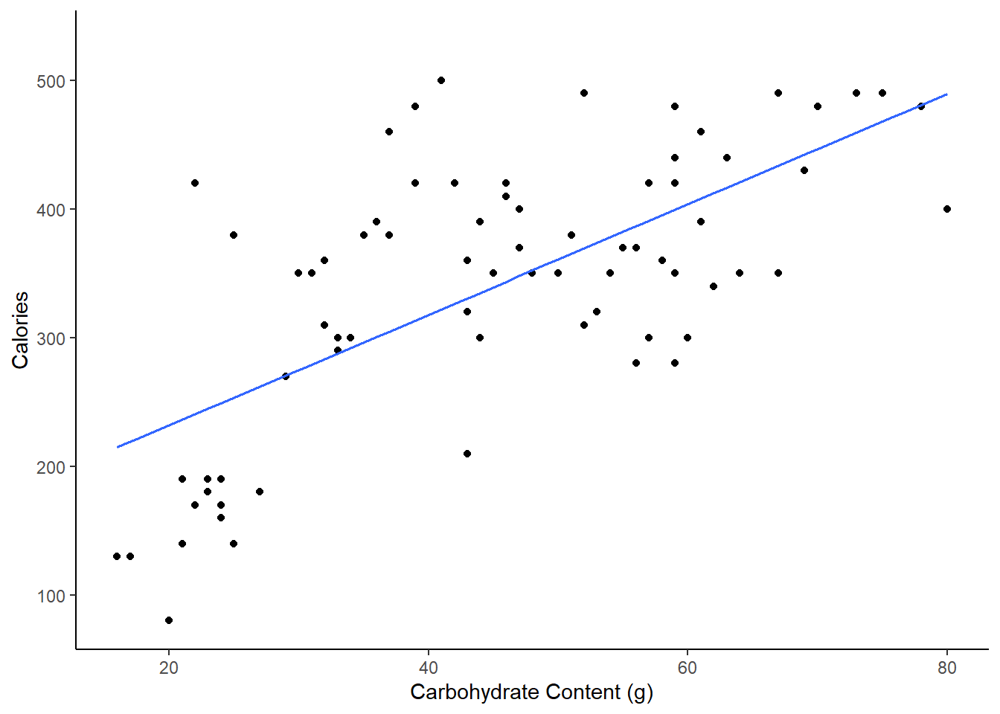
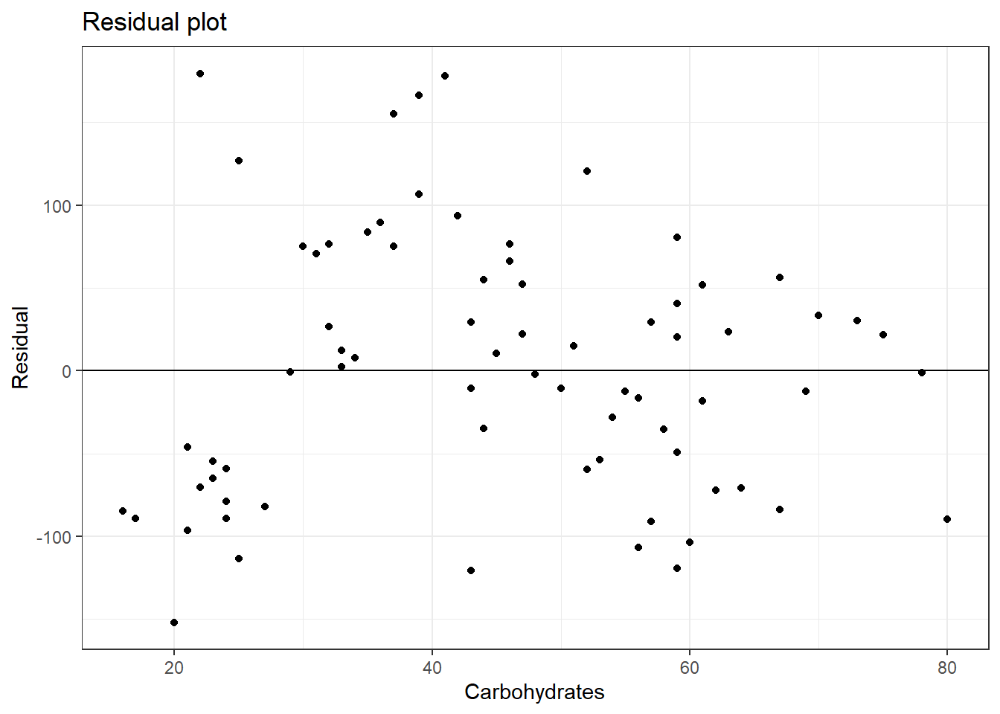

Chapter 24 Linear Regression Basics
24.1 Objectives
- Obtain parameter estimates of a simple linear regression model given a sample of data.
- Interpret the coefficients of a simple linear regression.
- Create a scatterplot with a regression line.
- Explain and check the assumptions of linear regression.
- Use and be able to explain all new terms.
24.2 Homework
24.2.1 Problem 1
Nutrition at Starbucks
In the data folder is a file named starbucks.csv. Use it to answer the questions below.
- Create a scatterplot of number of calories and amount of carbohydrates.
starbucks <- read_csv("data/starbucks.csv")## Rows: 77 Columns: 7## ── Column specification ────────────────────────────────────────────────────────
## Delimiter: ","
## chr (2): item, type
## dbl (5): calories, fat, carb, fiber, protein##
## ℹ Use `spec()` to retrieve the full column specification for this data.
## ℹ Specify the column types or set `show_col_types = FALSE` to quiet this message.glimpse(starbucks)## Rows: 77
## Columns: 7
## $ item <chr> "8-Grain Roll", "Apple Bran Muffin", "Apple Fritter", "Banana…
## $ calories <dbl> 350, 350, 420, 490, 130, 370, 460, 370, 310, 420, 380, 320, 3…
## $ fat <dbl> 8, 9, 20, 19, 6, 14, 22, 14, 18, 25, 17, 12, 17, 21, 5, 18, 1…
## $ carb <dbl> 67, 64, 59, 75, 17, 47, 61, 55, 32, 39, 51, 53, 34, 57, 52, 7…
## $ fiber <dbl> 5, 7, 0, 4, 0, 5, 2, 0, 0, 0, 2, 3, 2, 2, 3, 3, 2, 3, 0, 2, 0…
## $ protein <dbl> 10, 6, 5, 7, 0, 6, 7, 6, 5, 7, 4, 6, 5, 5, 12, 7, 8, 6, 0, 10…
## $ type <chr> "bakery", "bakery", "bakery", "bakery", "bakery", "bakery", "…starbucks %>%
gf_point(calories~carb) %>%
gf_labs(x="Carbohydrate Content (g)",y="Calories") %>%
gf_theme(theme_classic())
We put calories as the response.
- Describe the relationship in the graph.
There is a positive, moderate, linear association between number of calories and amount of carbohydrates. In addition, the amount of carbohydrates is more variable for menu items with higher calories, indicating non-constant variance. There also appear to be two clusters of data: a patch of about a dozen observations in the lower left and a larger patch on the right side. There might be some natural groupings of the these points. For example, the points in the lower left might come from a light menu.
- In this scenario, what are the explanatory and response variables?
Response: number of calories. Explanatory: amount of carbohydrates (in grams).
- Why might we want to fit a regression line to these data?
With a regression line, we can predict the amount of calories for a given number of carbohydrates. This may be useful if you are concerned about your carb intake and its impact on calorie consumption. Typically you can get both on the menu so this model might not be that valuable.
- Create a scatterplot of number of calories and amount of carbohydrates with the regression line included.
starbucks %>%
gf_point(calories~carb) %>%
gf_labs(x="Carbohydrate Content (g)",y="Calories") %>%
gf_lm() %>%
gf_theme(theme_classic())
- Using ’lm()` fit a least squares line to the data.
star_mod <- lm(calories~carb,data=starbucks)summary(star_mod)##
## Call:
## lm(formula = calories ~ carb, data = starbucks)
##
## Residuals:
## Min 1Q Median 3Q Max
## -151.962 -70.556 -0.636 54.908 179.444
##
## Coefficients:
## Estimate Std. Error t value Pr(>|t|)
## (Intercept) 146.0204 25.9186 5.634 2.93e-07 ***
## carb 4.2971 0.5424 7.923 1.67e-11 ***
## ---
## Signif. codes: 0 '***' 0.001 '**' 0.01 '*' 0.05 '.' 0.1 ' ' 1
##
## Residual standard error: 78.26 on 75 degrees of freedom
## Multiple R-squared: 0.4556, Adjusted R-squared: 0.4484
## F-statistic: 62.77 on 1 and 75 DF, p-value: 1.673e-11- Report and interpret the slope coefficient.
The estimated slope is 4.297 so one additional gram of carbohydrates results in an average increase in calories of 4.297.
- For a menu item with 51 g of carbs, what is the estimated calorie count?
146.0204+4.2971*51## [1] 365.1725- Could we use the model for a menu item with 100 g of carbs?
summary(starbucks)## item calories fat carb
## Length:77 Min. : 80.0 Min. : 0.00 Min. :16.00
## Class :character 1st Qu.:300.0 1st Qu.: 9.00 1st Qu.:31.00
## Mode :character Median :350.0 Median :13.00 Median :45.00
## Mean :338.8 Mean :13.77 Mean :44.87
## 3rd Qu.:420.0 3rd Qu.:18.00 3rd Qu.:59.00
## Max. :500.0 Max. :28.00 Max. :80.00
## fiber protein type
## Min. :0.000 Min. : 0.000 Length:77
## 1st Qu.:0.000 1st Qu.: 5.000 Class :character
## Median :2.000 Median : 7.000 Mode :character
## Mean :2.221 Mean : 9.481
## 3rd Qu.:4.000 3rd Qu.:15.000
## Max. :7.000 Max. :34.000The maximum carb value is 80 so 100 is outside of the observed data. It would be suspect to extrapolate to that value.
- Does the assumption of constant variance seem reasonable for this problem?
We are going to use the broom package to get the residuals and corresponding independent variable values. You could also get the residuals from the model object and the independent variable values from the original dataframe.
library(broom)augment(star_mod) %>%
gf_point(.resid~carb) %>%
gf_hline(yintercept = 0) %>%
gf_theme(theme_bw()) %>%
gf_labs(title="Residual plot",x="Carbohydrates",y="Residual")
It seems that the variance in the second group is larger that the first, so it may not be a reasonable assumption. Also note that the linearity assumption is also questionable.
- Verify that the line passes through the mean carb and mean calories, do this mathematically.
146.0204+4.2971*44.87## [1] 338.8313It checks.
- What is the estimate of the standard deviation of the residuals? How could you use this information?
The estimate is 78.26. If the normal assumption is accurate, we would expect a majority of observations to be within \(\pm\) 78.26 calories of the line.